Yours
No account, no cloud and no telemetry. Updates ask first, and every update can be undone.
v0.4.0 is done · v0.5.0 is next
Freally OS starts in seconds, runs only what you asked for, and every line of it is written in-house.
Freally OS is free today, but it might not be free forever: future versions may be sold.
There are no downloads yet, and the source code is private.
Freally OS is a new desktop operating system, written from the first instruction up: its own bootloader, kernel, drivers, desktop and apps, all in Rust, all in-house.
Apart from Rust's core library, none of its code comes from another project. That is how it can promise what other systems offer only as settings: there is no telemetry to turn off, because none was ever written.
It is early. Today it starts, checks its own signature, and runs its kernel and its first program. The road below shows every step to 1.0, in order.

No account, no cloud and no telemetry. Updates ask first, and every update can be undone.

Nothing runs that you didn't start, and every process says in one sentence what it does.

The desktop in under 3 seconds, measured on every build. A change that breaks that budget doesn't ship.
One line per version, in order. This is the same ladder the private plan follows: if one moves, both move, and a build check compares them.
v0.1.0DoneThe foundation: its own bootloader checks a signed system image and paints the screen, and every quality check runs on every change.v0.2.0DoneFreally Core, the kernel: memory, interrupts, timers, a scheduler and messages. The first program starts, and a crash leaves a report.v0.3.0DoneServices and drivers: every processor core, the screen, keyboard and mouse, and updates that fall back on their own if they fail.v0.4.0DoneFirst light: the desktop, a terminal, a shell, and Monitor, which explains every process. The desktop in under 3 seconds.v0.5.0The goalThe real laptop: Freally OS starts from a USB stick on its first laptop.v0.6.0LaterDeveloper tools: replace a running service in place, and roll it back, without a restart.v0.7.0LaterStorage, encrypted local accounts, Settings and Files.v0.8.0The goalThe tester build: signed releases, offline updates and a private image for testers.v0.9.0LaterNetworking, and online updates that ask first.v0.10.0LaterUSB.v0.11.0LaterSound.v0.11.5LaterTogether: invite anyone, on any computer or phone, by a link or a QR code, to work with you in the apps you share.v0.12.0LaterFreally's own programming language, first version.v0.13.0LaterThe app sandbox, and Freally Guard.v0.14.0LaterLinux programs in the terminal.v0.15.0LaterFreally OS builds itself.v0.16.0LaterTrackpad, battery, brightness and sleep.v0.17.0LaterWi-Fi.v0.18.0LaterPictures, your own background, and Photos.v0.19.0LaterThe first wave of apps.v0.20.0LaterThe browser: the web without scripts.v0.21.0LaterThe browser: JavaScript.v0.22.0LaterBrowser extensions and web protection.v0.23.0LaterGraphics acceleration.v0.24.0LaterDocuments.v0.25.0LaterSpreadsheets.v0.26.0LaterPresentations.v0.27.0LaterMedia: a player, a recorder and the camera.v0.28.0LaterMail and contacts.v0.29.0LaterWindows programs: console programs.v0.30.0LaterWindows programs: windowed apps.v0.30.5LaterMac programs: command-line tools.v0.30.6LaterMac programs: windowed apps.v0.30.7LaterMac programs: apps made only for Apple silicon.v0.31.0LaterThe Freally music apps, with VST3 and CLAP plugins.v0.32.0LaterEvery setting, every language, and a screen reader.v0.33.0LaterInstall to the computer's own drive.v1.0.0-beta.NLaterThe beta: every feature frozen, tested and written down.v1.0.0-rc.NLaterThe release candidate: every feature tested on real hardware.v1.0.0The goalVersion 1.0, and the first download.v1.1.0 … v2.0.0LaterAfter 1.0: one version at a time.A version that is done is built, tested and tagged. It is not a download: there are none, and there won't be until 1.0.
There is no telemetry, no crash upload, no account and no background connection. The update check, when it arrives, runs only when you turn it on, and tells you what it will download before it does. This site loads nothing from other sites and runs no analytics.
Freally OS runs on its author's own computers for now. It does very little yet that you would use every day, and the road above says plainly when each part arrives.
No beta on this page, no preview build, no early access. Each version is built and tested in private until 1.0.
The changelog lists everything that changed in Freally OS, version by version, in all eighteen languages.